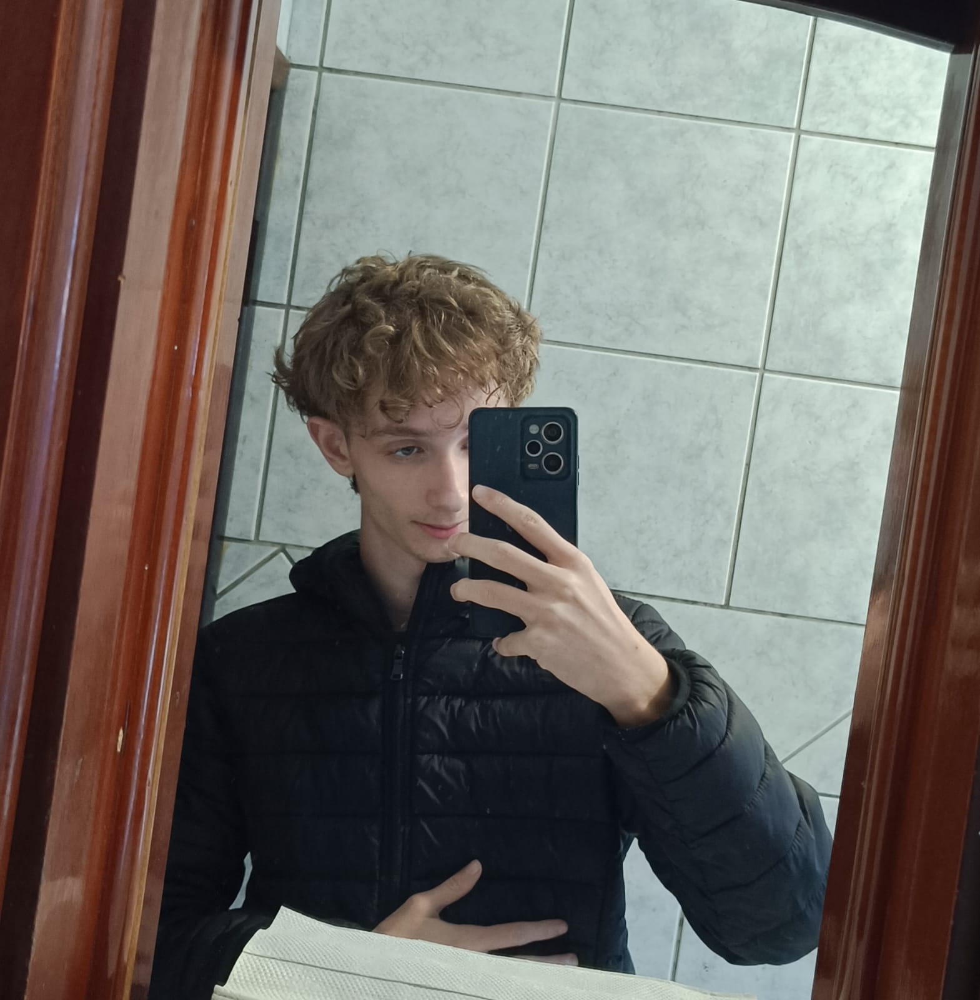
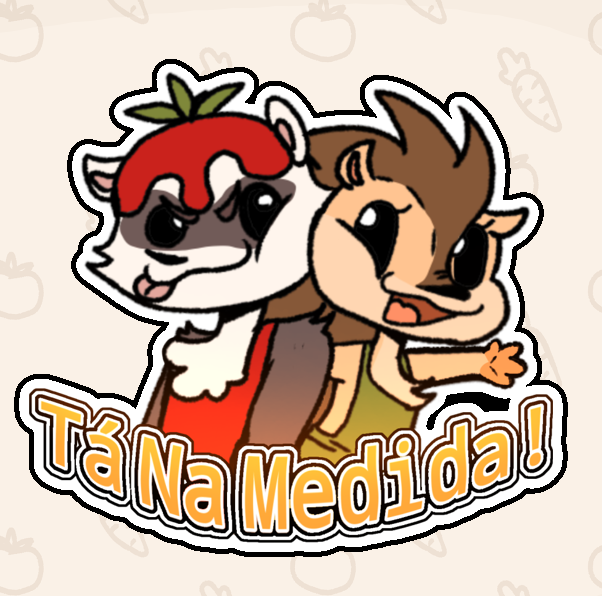
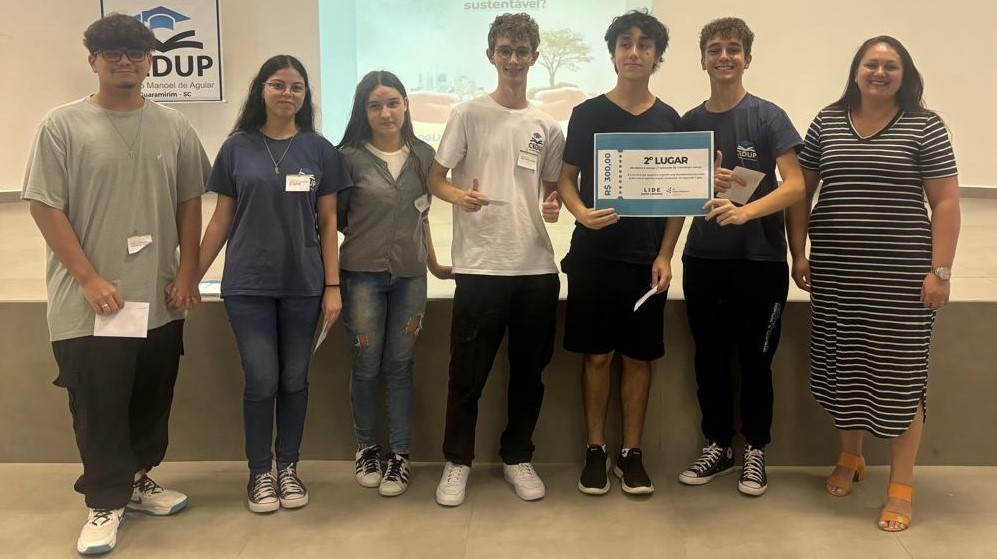
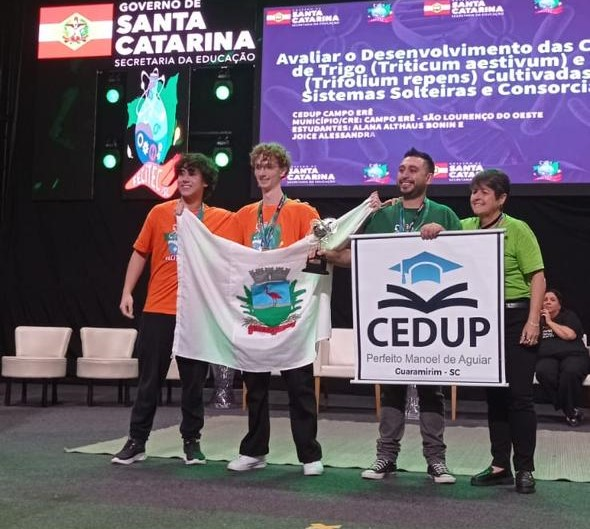
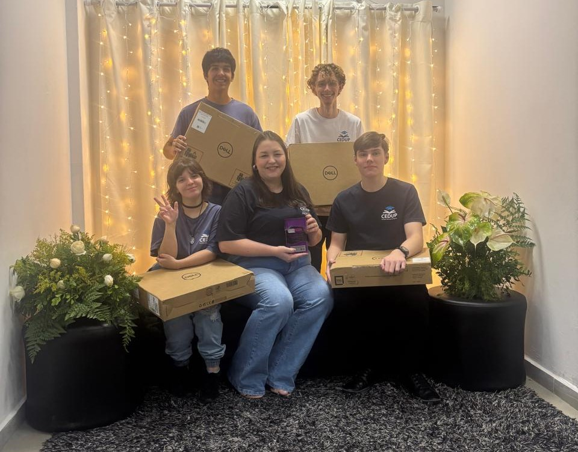
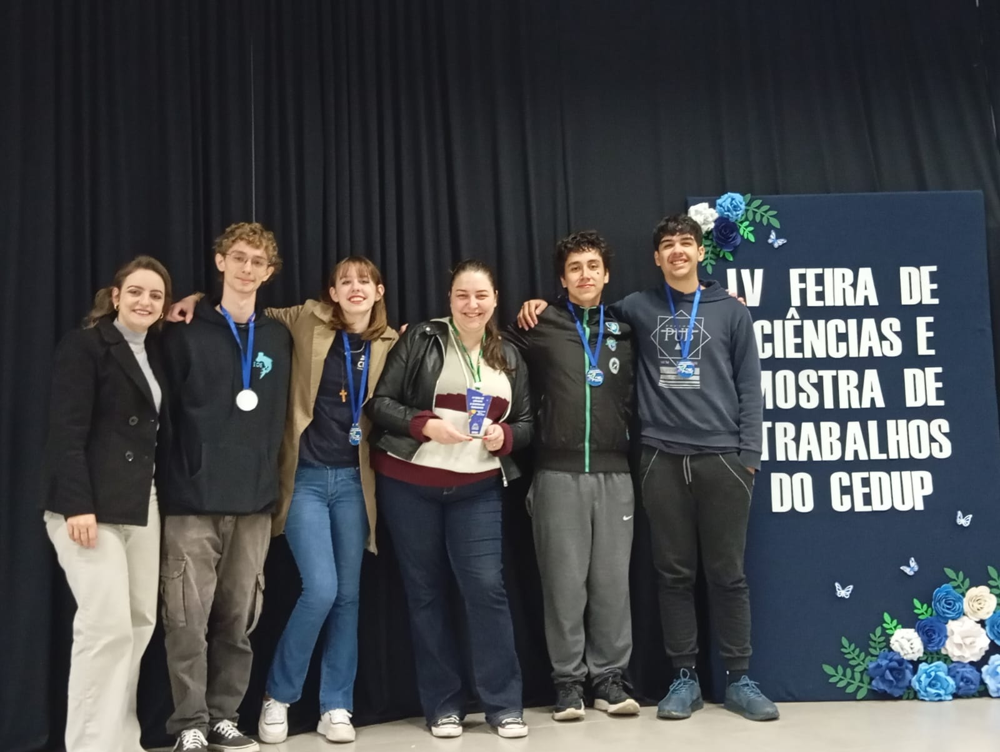
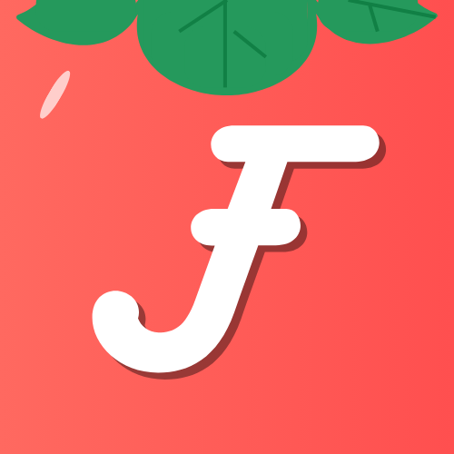

José Vitor Mader
💻 Desenvolvedor Full Stack | Especialista em Ciência de Dados | Inovador em Tecnologia
Perfil Profissional
🚀 Desenvolvedor na JMA Tecnologia
Atualmente trabalho como desenvolvedor na JMA Tecnologia, onde aplico minhas habilidades em desenvolvimento de sistemas e análise de dados para criar soluções tecnológicas inovadoras. Paralelamente, curso Técnico em Desenvolvimento de Sistemas e Técnico em Ciências de Dados, combinando teoria acadêmica com experiência prática profissional.
Tenho expertise em JavaScript, HTML, CSS, SQL, Python e React, desenvolvendo aplicações web completas e sistemas de análise de dados.
Reconhecido por projetos de impacto social e premiações nacionais, busco sempre desenvolver soluções que transformem positivamente a sociedade através da tecnologia. 🌟
Minhas Conquistas Recentes
🥇 1º Lugar - Feira Interna (30/06/2025)
Projeto "Tá na Medida" conquistou o primeiro lugar na feira interna da escola, demonstrando inovação em tecnologia aplicada à sustentabilidade alimentar.
🥈 2º Lugar no Innovation Camp da JA Brasil
Competição voltada para inovação e empreendedorismo, destacando ideias criativas e aplicáveis ao mercado.
🥈 2º Lugar na XXVI FECITEC Estadual
Feira Estadual de Ciência e Tecnologia, premiando projetos de impacto acadêmico e social.
🥇 1º Lugar no Nacional do Desafio de Dados da Vivo
Competição nacional promovida pela Vivo, premiando a melhor solução em análise de dados e inteligência artificial.
🏆 Classificação para Feira Regional
Projeto "Tá na Medida" classificado para representar nossa escola na feira regional de ciência e tecnologia.
Meus Projetos
🍎 Tá na Medida - Redução de Desperdício Alimentar
Aplicativo inovador desenvolvido para reduzir o desperdício de alimentos nas escolas estaduais. Utilizando inteligência artificial e análise de dados, o sistema otimiza o planejamento de refeições e monitora o consumo alimentar.
🎯 Principais Funcionalidades:
- 📊 Análise preditiva de consumo
- 🤖 IA para otimização de porções
- 📈 Dashboard de monitoramento
- 🔄 Sistema de feedback dos estudantes
🏆 Conquistas: 1º lugar na feira interna (30/06/2025) e classificação para a feira regional
🌐 Acesse: tanamedida.app.br
🚀 Fuuto - Inteligência Artificial para Gestão de Alimentos
O Fuuto é um aplicativo inovador que utiliza inteligência artificial para transformar a gestão de alimentos nas escolas públicas estaduais de Santa Catarina. Vencedor do Desafio Nacional de Dados da Vivo 2024.
🎯 Objetivos Principais
- ✅ Gestão inteligente de ingredientes com IA
- ✅ Monitoramento por visão computacional
- ✅ Sistema de feedback estudantil
- ✅ Sustentabilidade através de compostagem
🏆 1º Lugar Nacional no Desafio de Dados da Vivo 2024
🎓 Site CEDUP Perfeito Manoel de Aguiar

Desenvolvimento completo do site oficial da escola CEDUP Perfeito Manoel de Aguiar. Site responsivo e moderno, com sistema de gestão de conteúdo e integração com redes sociais.
💻 Tecnologias: HTML5, CSS3, JavaScript, PHP, MySQL
🌐 Acesse: cedupguaramirim.com.br
🗳️ Site UniCEDUP - Chapa do Grêmio Estudantil

Desenvolvimento do site da chapa UniCEDUP para eleições do grêmio estudantil. Interface moderna e interativa, com propostas, galeria de fotos e sistema de contato.
💻 Tecnologias: React, Next.js, CSS Modules, Vercel
🌐 Acesse: unicedup.vercel.app
 GitHub
GitHub
 LinkedIn
LinkedIn